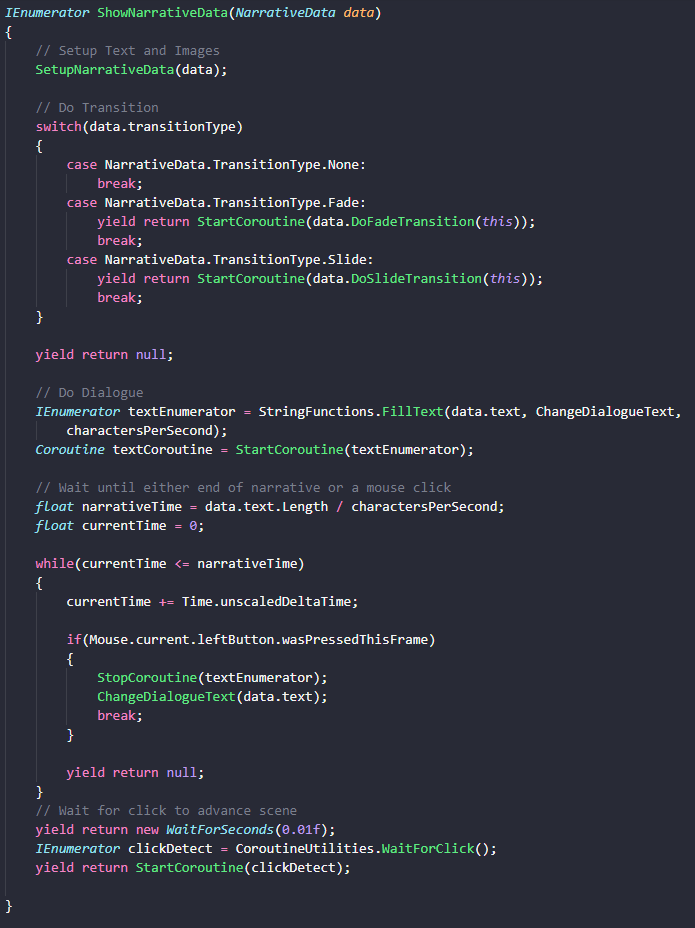
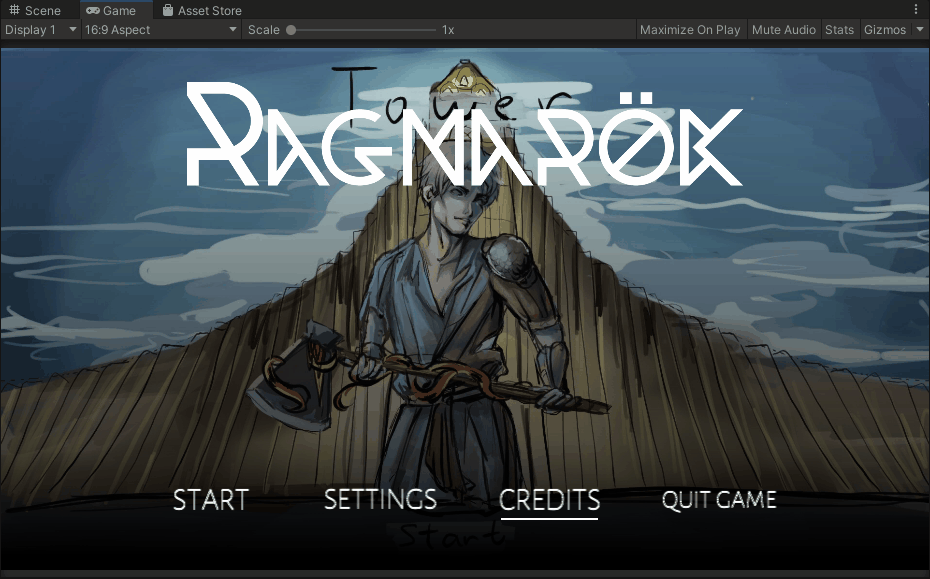
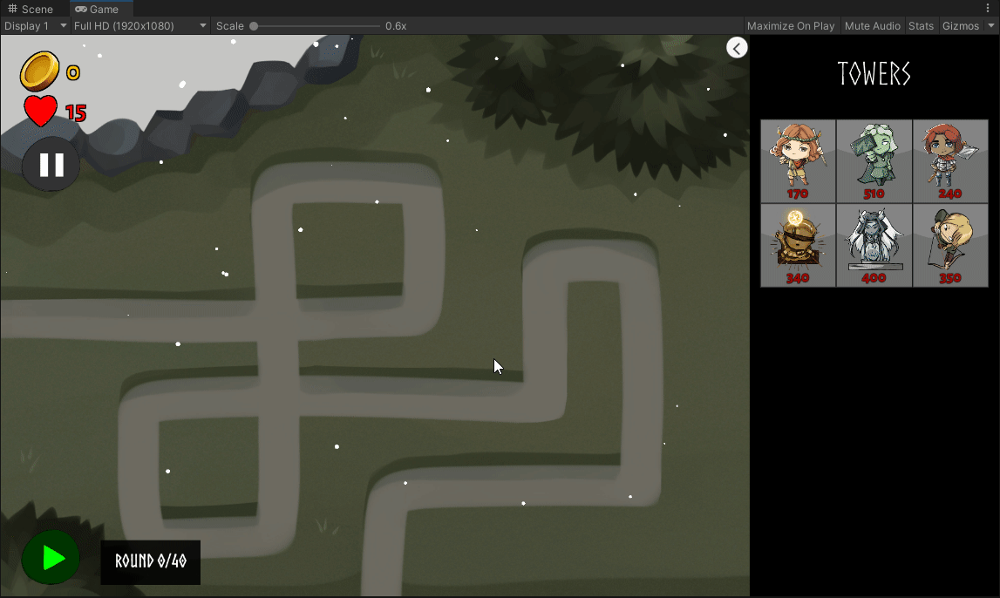
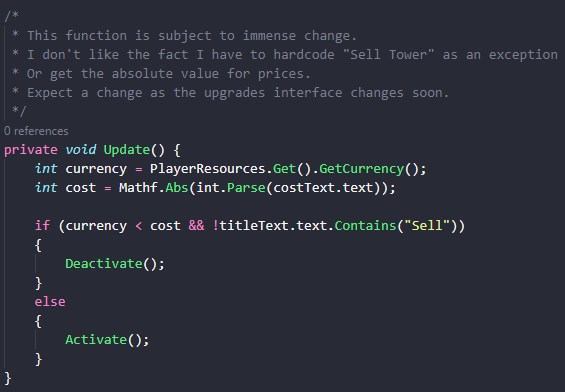
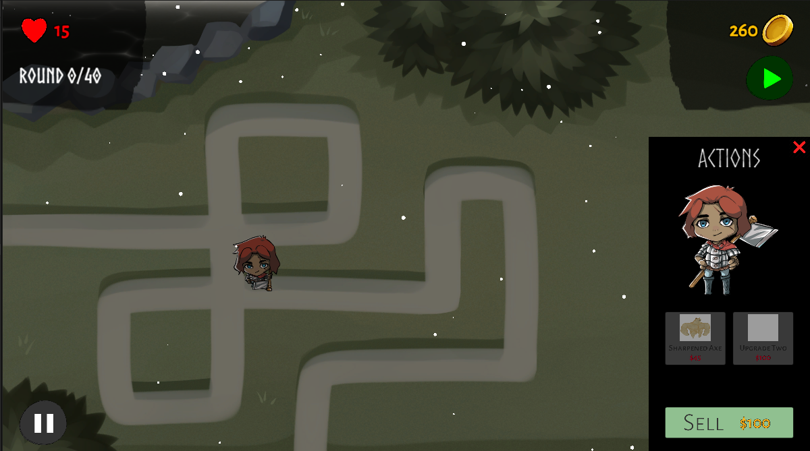
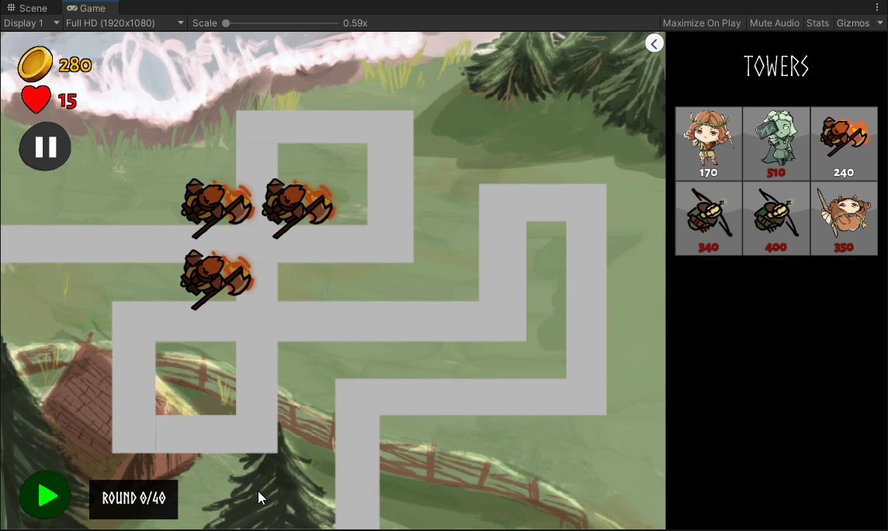

Pre-Beta 1
Nov 1 to Nov 14 - Coroutines Are the Bane of My Existence
Another sprint, another batch of UI iterations. Much of my work this sprint was on updating the UI of the game, as well as adding in various quality of life improvements that have been asked for throughout the game's development. Additionally, work was done on playtesting and balancing of the game as a whole.
Programming and Development (17 Hours)
Programming and development took up the bulk majority of my time these two weeks. The significant majority of that was spent implementing some of my previously made UI documentation into reality. As I mentioned last sprint, I had stopped work on the main game and narrative scene UIs because others were working on them - well, now in these last two weeks I've had the opportunity to work on them. While I was able to get a significant amount of work done on both, significant headaches throughout development stymied my productivity and led to me not getting as much as I had hoped done this sprint.
Narrative Iteration
One of my major accomplishments for this sprint is the completion of some major quality of life improvements to the game's narrative system.
For context, a significant request from many playtesters of the game during the last couple of weeks has been the addition of the ability to click through narrative scenes. Previously, there was no way to auto-complete the scrolling text, and players needed to click a button in order to move forward in the scene. Additionally, people had repeatedly requested that we add in a button to skip the narrative scene entirely, as it often became very annoying to experience on repeated playthroughs.
Thus, I set out to implement these features into our game. While they initially seemed simple - just a check for user mouse input - a litany of problems would arise that led to various headaches in the development of the narrative scene:
-
For some reason, previous developers had decided to implement the narrative scene using solely coroutines. This significantly stunted progress on development when I initially approached it, as not only was I less experienced with coroutines, but also because I feel it made the code much more complex and harder for other developers to understand. For example consider the code below. One major headache I ran into was getting the program to differentiate the two click actions: Clicking to finish the text, and clicking to progress the scene. The way the
IEnumerator ShowNarrativeDatafunction worked, one single click would have been detected by BOTH coroutines, ending up leading to the text completing... and then immediately skipping to the next line. I had to solve this with another rather hacky solution - waiting 0.01 seconds so thatwasPressedThisFramewould return true in one case and false in the next - when I think it could have more elegantly been solved with perhaps various event listeners and a boolean flag to find if the text was scrolling or not.  - Another issue I ran into was some git and planning issues - while working on the narrative scene, our programming lead ended up pushing their own solution to the problem before I could, despite the task being assigned to me. This was because they "needed it to work on another thing". However, their solution was faulty, leading me to spend time needing to debug their solution to now work with the code I had already written. This added a good hour or two to my work.
Thus, while the narrative work was successful, I think it was made significantly harder than it had to be due to some poor planning and code design issues. Unfortunately, this late in development I really am not in a position to do much about it, but it is something to note. Below are gifs of my work - the ability to finish text on click is first, and the button to skip the scene is second.
Upgrades and Main UI
At least narrative work was actually completed. The same, however, can not be said about the upgrades UI.
The upgrades panel and the main game UI have been the greatest hurdle I've had to handle in the development of Project Tower, no contest. The current system of implementation for it is simply not built to mesh with the progression of the game we intend to do, and as a result I've had to tear down, rebuild, and refactor a significant portion of it in the last week.
For context, let us reconsider one of the earliest things I made for this project - a one-page sheet illustrating the plan I had for the UI of the game:

In this image, especially under the one for "Main Gameplay Screen", you can see my initial plan for the game's UI, with important metrics located in the corners, and the purchase/upgrade menus taking up a smaller portion of screen real estate in the bottom right corner. Additionally, the upgrades/info panel is significantly smaller, with a more clear line of progression between upgrades and a separate, more isolated "Sell" button.
Below in this gif, you can see what the currently existing state of our tower upgrade panel UI is. Not only does the panel not indicate the name of the tower, but the sell button is implemented using the same kind of button as the rest of the upgrades. As a result, a rather poor design decision was made - the code for tower upgrade functionality and tower selling functionality were bundled into the same controllers, and that code was spread out across various scripts and controllers for the entire upgrades panel.
Sidenote: The gif also shows one of the few main screen UI changes that actually did make it in - the panels of the upgrade panel now change color to indicate whether or not that upgrade could actually be purchased. This implementation came with another "hacky" solution: Remember that code for buying upgrades and selling towers were encapsulated into the same scripts. In this case, this meant that clicking on an upgrade panel button could buy an upgrade or sell the tower, depending on the button. However, since the buttons are "functionally" the same, the same script is used for both functions. Case in point, consider selling the tower - this would give the player money. Thus, as a result, it was implemented such that clicking the button for "sell" would read the cost text on the button, parse it into an integer, and add that to the player's money. Now remember - that same code is also supposed to handle buying upgrades, something that should lose the player money. For some reason, it was decided that this would be handled as essentially negative selling and as thus, all prices for upgrades (as you can see in the gif above) just have a negative sign attached to them.
I had to deal with this in the code (see below) to change the color of the panel - and had to make a special exception such that the "Sell" panel wouldn't get deactivated.
Now, that code above - and more - have actually been cleaned up and changed significantly as a result of changes I plan to make to the fundamental UI of the game. For visual context, see the image below, which should much closer match the initial UI mockup I had created. Specifically, notice the new UI for the upgrades panel.
None of the changes above, however, are currently in the build - this is because problems like the one I describe above are rampant all throughout the upgrade code, leading to a significant refactor that I am still currently in the process of completing. Prepare for many more opinions from me in that upcoming dev blog.
As a minor add on, one piece of main screen UI that I worked on that did make it into the sprint was work I completed last week - improvements to the speed button such that one could not only better see when a round was active or had finished, but also saved the user's speed preference in-between rounds. Below is a gif of it working.
Meetings (4 Hours)
I spent four hours of my time in various studio meetings, the majority of which were the main weekly meetings on Sundays. I do plan on meeting up with more individuals in the narrative team to hammer out some plans for the narrative scene's design. Again, not much to say here.
Documentation (2 Hours)
Surprisingly, not much to say on documentation from the designer standpoint - I've only really worked on some summaries and clean-up of previous playtesting transcripts, in order to make the notes more clear and make it more obvious what playtesters wanted out of our game. Expect this category to balloon significantly in the next week or two, as I go back through the game to start some significant balancing passes.
Playtesting (1 Hour)
I attended some industry playtesting sessions, notably leading the playtest of Project Tower for our playtest with Austin Yarger.